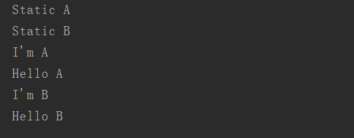
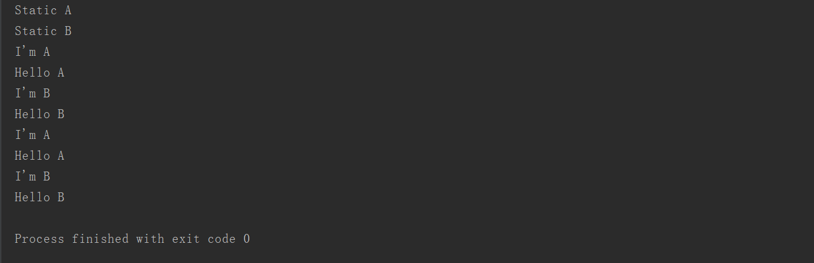

许多小伙伴对于java中的三种初始化块的执行顺序一直感到头疼，接下来我们就来分析一下这三种初始化块到底是怎么运行的。有些公司也会将这个问题作为笔试题目。
下面通过一段代码来看看创建对象时这么初始化块是如何运行的
package com.hxy;
public class CodeBlock{
public static void main(String[] args) {
new HelloB();
// new HelloB();
}
}
class HelloA{
//无参构造器
public HelloA(){
System.out.println("Hello A");
}
//初始化块
{
System.out.println("I'm A");
}
//静态初始化块
static{
System.out.println("Static A");
}
}
class HelloB extends HelloA{
public HelloB(){
System.out.println("Hello B");
}
{
System.out.println("I'm B");
}
static{
System.out.println("Static B");
}
}
运行结果如下图所示：

从运行结果来看，在新创建一个对象的时候，程序先执行初始化块，再执行构造器。
当普通初始化块被static修饰后就变成了静态初始化块，也被称作类初始化块。
普通初始化块是对对象进行初始化，而静态初始化块是对类进行初始化。所以静态初始化块要比普通初始化块先执行。
从上面的运行结果看。当第一次创建HelloB对象时，要先加载并初始化HelloB类。初始化HelloB类会先执行它父类的静态初始块（Static A），然后再执行它的静态初始化块。
综上所述：初始化块的执行顺序为：静态初始化块、普通初始化块、构造器。
接下来再看创建两个HelloB对象时它们又是怎么运行的。下面是运行结果：

从运行结果来看，可能出乎一些小伙伴的预料。
静态初始化块只在第一次创建对象时执行，也就是说不管创建几次对象。静态初始化块都只会执行一次。普通代码块和构造器则是创建几次执行几次，且普通代码块比构造器先执行。